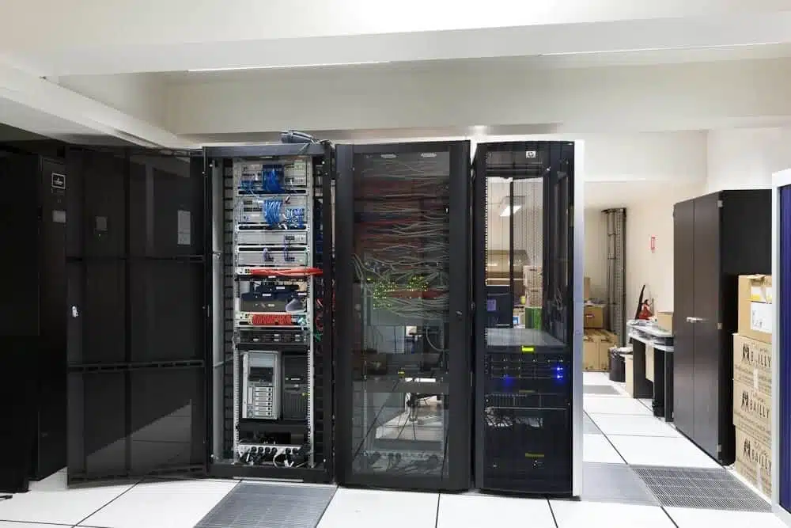

Support informatique
- Assistance de premier et second niveau auprès des utilisateurs.
- Gestion d'incidents Windows, VPN, SAP, son, réseau et sessions bloquées.
- Diagnostic d'écrans bleus causés par des pilotes réseau obsolètes.
Pour mon stage de deuxième année, j'ai intégré le service IT de Minebea AccessSolutions. J'ai participé au support informatique, à la configuration de postes, aux interventions sur SAP, aux incidents VPN et à la maintenance du parc informatique.

Cette progression montre la montée en autonomie pendant les 8 semaines.
Changement d'UPN, certificats, ajout de carte WiFi, incidents réseau, écrans bleus et configuration de postes au domaine.
Configuration de postes supplémentaires, dépannage SAP, transfert de données et correction d'une erreur de création d'utilisateur.
Préparation de laptops, récupération d'anciens PC, formatage de disques et gestion d'une panne VPN affectant plusieurs postes.
Correction d'un problème HEIC, diagnostic d'un disque dur HS, reconfiguration d'un poste fin de ligne et mise à jour d'une procédure.
Restauration d'une base de données, préparation de trois postes en autonomie, clés USB sécurisées, son et déblocage Windows.
Résolution d'un problème serveur sur Wyse, préparation des ZBook pour trois sites en France et configuration de CATIA.
Finalisation des ZBook, préparation de postes backup pour remplacer des Wyse, changement d'alimentation et mots de passe SAP/Windows.
Préparation et reconfiguration d'un laptop, déblocage de sessions Windows et déblocage de comptes SAP.
Le stage a consolidé les compétences du référentiel BTS SIO SISR.
Configuration, formatage, déploiement de laptops ZBook, suivi de postes et préparation de matériels.
Pannes, écrans bleus, SAP, VPN, déblocage de sessions, son et demandes utilisateurs.
Mise à disposition de postes, ajout au domaine, GPO, déploiement de CATIA et postes de remplacement.
Ce stage m'a permis d'utiliser des outils du quotidien d'un technicien IT: Active Directory, SAP, VPN, déploiement de postes, Hiren's Boot CD, Rufus et maintenance matérielle. La diversité des situations m'a rendu plus polyvalent.
J'ai appris à communiquer avec les utilisateurs, gérer les priorités et travailler avec davantage d'autonomie. À partir de la cinquième semaine, j'étais capable de préparer et configurer des postes complets sans assistance.